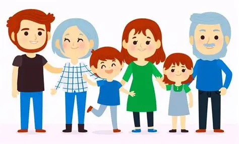
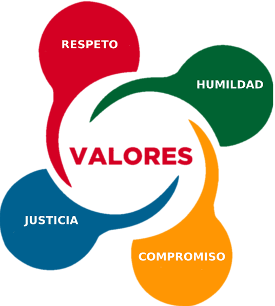
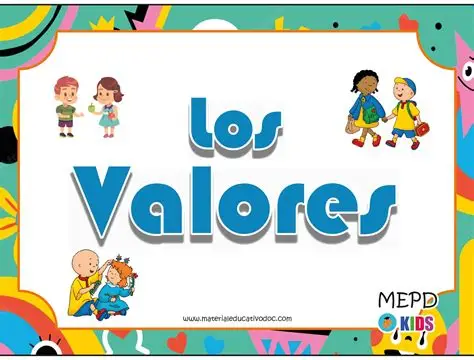

En las ultimas decadas se a generalizado una cadencia y desconosimiento de los volores universales. En la sociedad actual, es una de las problematicas que tiene su origen en el contexto del hogar y se ve infruenciado por la sociedad en donde se desevuelve ¿por que es nesesario rescatar y aplicar varores tan basicos como el respecto?las faltas de conductas indentificadas en las aulas denotan esa carencia que entorpese el aplendizaje y comportamiento en el aula los resultados de trabajo social nos da un indice de 100 incidencias por diversos temas, en los que destaca:su negacion a portar el uniforme correctamente, el uso esecivo de maquillaje en las alumnas el cabello suelto y en varones el corte de cabello, falta de materiales didacticos, inpuntualidad en clase y ausentismo en el turno matutino. ¿como reforsar los volores nesesarios para formar ciudadanos libres y responsables con su contexto social?
golpes, agreciones,uso de arrmas, ETC
amenasas, manipulacion, humillacion o cualquier conducta que cause daño emocional
cualquier acto sexual no consesuado, acoso o abuso
control o limitacion de recursos economicos, privacion de la libertad financiera
fomentar el respecto, empatia, respecto y igualdad a los alumnos
resolver confrictos mediante el dialogo
realizar actividades que fortalescan la combivencia
promover valores como la torerancia y responsabilidad
capacitar a los docebtes y alumnos sobre la violencia escolar
cumplir las reglas del marco de comvivencia justamente
no quedarse callado y abrar con un adulcto de confiansa
informar a alguien de confiansa
no responder con violencia y siempre el dialogo
reunir pluebas en caso de sufrir civeracoso
apoyara l as victimas y no participar en actos violentos
en casos graves acudir con autoridades
esta pagina fue creado con fines educativos por iker emmanuel y alan emiliano